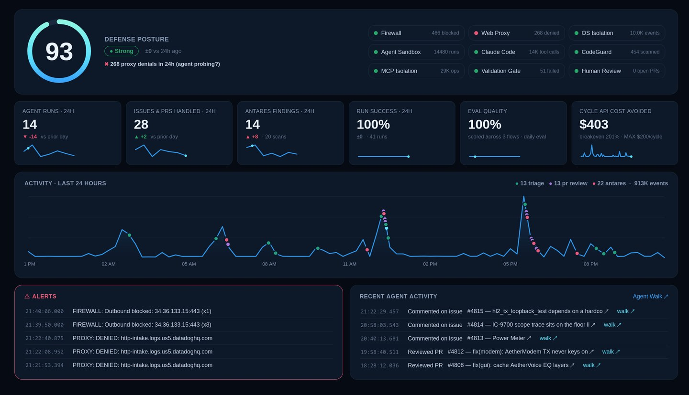

You no longer need to be a C++ programmer to fix something
in this project. You need judgement, a radio, and the patience to check
work — the same things that make a good Elmer.
Every open-source project says it welcomes newcomers. Most then hand you
a wall of build instructions, a toolchain that fights you for a weekend,
and a code review that assumes you already know what a rebase is. The
welcome is sincere; the on-ramp is still a cliff.
That cliff is what actually changed. Not the code — the on-ramp. We've
published a first-contribution cheat sheet
that takes you from "I've never used GitHub" to a merged pull request, and
the striking thing about it is that you never type a command. Every step is
a sentence you say, in English, to an AI coding agent working inside your
editor.
You're the control operator
Here's the part worth being clear about, because it's where the whole
thing succeeds or fails: the agent does the typing, not the deciding.
It will install dependencies, find the bug, write the fix, and draft the
pull request. It will also sound completely confident while being wrong.
That is not a flaw you can prompt your way out of — it's the nature of the
tool, and it's exactly why the human in the chair still matters. Your job
is to read what it proposes before you say yes.
If you've ever supervised a Technician on your license, the arrangement
will feel familiar. Someone else is on the mic. You're still responsible
for what goes out. The cheat sheet states it as four rules, and the third
one — it sounds confident even when wrong — is the one to
internalize.
So the skill that makes you useful here isn't C++. It's knowing what
AetherSDR is supposed to do when you key up, and noticing when it doesn't.
That's operator knowledge, and no amount of model capability substitutes
for it.
What it costs to start
Three things: a free editor, a GitHub account, and one AI coding agent.
The cheat sheet walks through Copilot, Codex, and Claude Code side by side,
including which tiers can actually drive your editor and which are chat
only — a distinction worth checking before you pay for anything. There is
a genuinely free path. Limits shift often enough that the cheat sheet links
to the live pricing pages rather than quoting numbers that go stale.
The GitHub account is the one step nothing can do for you. Pick your
callsign as the username — it's public, and it's the handle the rest of us
will know you by.
Finding a first job
Issues tagged good first issue
are the front door. Ask your agent to read the open ones and explain the
top few in plain English, then to recommend one — it's surprisingly good at
judging which bugs are self-contained.
Then claim it before you start. Claiming means adding yourself to the
issue's assignees, not leaving a comment saying you'll take it. Our triage
bot is auto-assigned to everything, so an issue showing only the bot is
free. This is the one piece of etiquette that matters on day one: it's what
stops two people quietly fixing the same bug on a Saturday afternoon.
Bring evidence, not vibes
"Works on my machine" is not evidence, and this is where a first PR
usually either lands or stalls.
AetherSDR ships an agent automation bridge — a switch you flip at launch
that lets your agent drive the running application directly: read the state
of any control, move sliders, click buttons, capture the panadapter. So
instead of asserting the bug is fixed, your agent can walk the issue's
exact reproduction steps through the app and show the control values before
and after.
It's the difference between eyeballing the S-meter and putting the radio
on a service monitor. Reviewers here look for that trace, and a first pull
request that arrives with one moves noticeably faster than one that says
"works for me."
Two ground rules the cheat sheet is firm about, both of which protect your
station rather than the codebase: check the radio isn't already in use
before launching a test run, because two clients fighting over one radio
produce evidence that is simply wrong. And ask for receive-only testing.
The bridge refuses to transmit unless you explicitly enable it — leave it
that way for your first run.
When it goes wrong
It will. A build will fail, a check will go red, GitHub will call your
commit "Unverified" for reasons that make sense to roughly nobody the first
time.
The entire troubleshooting procedure is: copy whatever you see, paste it
to your agent, and add "This happened. What does it mean and what
should we do?" That sentence resolves the overwhelming majority of
first-timer problems, because the errors are well-known ones and the agent
has seen them all.
Why we bother
Ham radio has always run on people explaining things to each other —
someone signed your license test, someone talked you through your first
HF contact, someone told you your audio was too wide. That tradition is
the reason this project is worth contributing to at all.
The tooling now handles the part that used to gate people out: the syntax,
the build system, the git incantations. What it can't supply is someone who
knows what a properly-behaving panadapter looks like at 3 AM during a
contest. That's you.
Read the cheat sheet,
pick an issue, and open the pull request. If you get stuck at any point,
start a discussion —
asking early is not an imposition here, it's the tradition. 73.
The question I get asked most now isn't about DSP. It's
how much of AetherSDR the AI wrote — and whether that makes this a
"vibe coding" project. The honest answer: a great deal of the typing,
almost none of the deciding. And the most useful prompt I have ever
written for this project did not ask for a single line of code.
AetherSDR started in March 2026. It is now around 2,700 commits and
380,000 lines of C++ and Qt, merged across some 1,800 pull requests,
with fifty-odd contributor identities in the log. Half a dozen distinct
AI tools touch it — Claude Code, AetherClaude, Codex, Copilot,
Gemini, Aider — but the count of tools is the boring number.
The one that matters is instances, and it has no ceiling: at minimum
one agent per contributor, running simultaneously from machines that
have never heard of each other, and a single orchestrated run on my
own bench can fan out to ninety of them at once.
Downstream of all of it is a community of more than two thousand
operators worldwide, running builds of AetherSDR that contain no
human-authored code, filing the bug reports our agent triages, asking
for the features our agent implements. Several of the people shaping
this project most directly have never written a line of C++. They
describe what's wrong,
or what's missing, in plain English — and
AetherClaude,
our autonomous triage agent, which reads every new issue, asks for
whatever's missing, and opens the pull request itself, turns it into a
change that goes through the same gate as everything else.
The barrier to contributing is no longer knowing how to code. It's
knowing how to describe what you need.
"You'll give up in a week"
Before any of this existed, I told an Elmer I was going to write a
native Linux client for FlexRadio hardware. He told me I would fail,
and that I would probably give up inside a week.
He wasn't being unkind. He was being experienced, which is a
different thing and usually a more reliable one. He knew the size of
the protocol surface. He knew roughly what SmartSDR had cost to build.
And he had watched people announce this exact project before and go
quiet a month later, which is a pattern worth respecting.
Arthur C. Clarke put it better than I can, in what's now called his
first law: when a distinguished, elderly expert says something is
possible, he is almost certainly right; when he says it is impossible,
he is very probably wrong. Amateur radio runs on Elmers, and that
tradition is most of the reason any of us know anything at all. But
the failure mode of hard-won experience is that it's calibrated
against the tools that existed while it was being won.
His arithmetic was correct. A native client is several hundred
thousand lines of Qt, DSP and protocol work, and he was measuring how
long that takes a person. What changed isn't that I turned out to be a
better programmer than he thought. It's what a week is now worth.
It started with a prompt for a prompt
The first thing I typed at this project wasn't a request for code. It
was a request for a prompt.
I gave it three things and nothing else. What I wanted:
a Linux-native version of SmartSDR. What I had to work
with: full API documentation, in the form of FlexRadio's own
FlexLib, and a pile of screenshots of the application I was trying to
match. What it had to run against: a FLEX-8600. Then
the actual instruction — write me a detailed prompt I can paste back
into Claude Code, one that will produce a detailed plan and an
implementation strategy for this project.
Prompt inception, if you like. And of everything in this post it's the
technique I'd most want a newcomer to take, because it inverts what
almost everyone does first.
The instinct is to prompt for the outcome: "build me a Linux SmartSDR
client." You will get something, and it will compile. It will also have
quietly decided a hundred things you'd have decided differently — the
threading model, where settings live, whether the panadapter owns its
own FFT — and you won't find out which hundred until you're eight
thousand lines in and one of them turns out to be load-bearing.
Prompting for the prompt puts a reviewable artifact in between. A
model asked to write the brief has to make its assumptions explicit, in
prose, before any of them have been cast into code — and prose is
something you can read in ten minutes and argue with. That is the whole
trick. Correcting a paragraph is free. Correcting the same
misunderstanding after it has been expressed as a class hierarchy is
not.
The three things I supplied are worth separating out, because that
shape has held for every large piece of work since:
What I wanted — one sentence, in plain terms, with
no implementation in it.
What I had — the authoritative sources. FlexLib is
FlexRadio's own library, which makes it the protocol truth; pointing
at it up front is the reason this project never had to guess at the
wire format. The screenshots did the same job for the interface.
What it had to work against — the actual radio on
the bench, named.
Two of those three are materials, not instructions, and that ratio is
about right. Most of the leverage in prompting a large project turns
out to be in telling the model where the authority lives rather than in
telling it what to do — which is, eventually, how a constitution ends
up checked into the repository.
The thing that actually breaks
None of which survives contact with scale on its own. At the volume
those numbers describe, "describe what you want and accept the diff"
stops working — not slowly, and not because the code is bad. It stops
working because the code is plausible.
It is also why this project doesn't take human-authored code. Not
human contribution — that's most of what makes it good. But the code
itself is written by agents, working against conventions that are
written down.
Look again at that contributor list. Dozens of people I have mostly
never met, many of whom have never written code at all, and
vanishingly few of whom have read the architecture holding up 380,000
lines. Every one of them arrives with their own habits and their own
idea of how a thing ought to be done. That isn't a criticism; it's
simply what working in a silo produces. But conventions only hold if
they're applied identically by everybody, every time, and a
distributed group of humans is worse at that than at almost anything
else — not through carelessness, through being individuals.
An agent is unusually good at precisely that. It re-reads the
conventions before every change, applies them the same way on a
Tuesday as on a Sunday, and has no preferred bracket style to smuggle
in. That consistency is the whole reason this project moves at the
pace it does — not because the model is fast, but because almost
nothing has to be re-litigated.
Which is also why bolting AI onto a mountain of existing
human-written code tends to produce slop. The conventions in a
codebase like that were never written down. They live in the heads of
the people who wrote it, a good half of them quietly contradict each
other, and an agent set to work there has nothing to be consistent
with. You get something plausible, in eight different
dialects, and the review burden lands straight back on you. If you
want this to work, be AI from the ground up. Projects that try to
layer it on afterwards routinely lose more time to that mismatch than
starting over would have cost them.
All of that said — a model that writes a subtly wrong fix also writes
a fluent, confident, thorough-sounding explanation of why the fix is
right. The two come from the same place. So the failure isn't a
compiler error you trip over — it's a merged pull request whose
description reads better than most human ones and whose claim was
never checked.
We have a documented example. A noise-reduction integration was
committed with the claim "alloc-free after the first call." Confident
wording, detailed test plan, and the verification step for that specific
claim had simply never been run. It had to be added before the claim was
worth anything.
The second failure is worse because it doesn't look like a failure at
all. An agent generates a patch against a snapshot of the tree, work
lands while it's thinking, and the patch quietly reverts it. That is
PR #2780
in our history: a run that silently undid two changes that had merged in
between. It was caught by a manual three-way merge audit. The automatic
gate did not catch it, because a clean diff is exactly what it looks
like.
Neither of those is fixed by a better prompt. They're fixed by writing
down what the project believes and enforcing it somewhere the agent
can't argue with.
One file that every tool reads
Every AI coding tool looks for its instructions at a different
well-known filename. Claude Code loads CLAUDE.md, Copilot
reads .github/copilot-instructions.md, Gemini reads
GEMINI.md, Aider reads CONVENTIONS.md. Keeping
five copies in sync is a losing game, so all of those are three-line
pointers to one real file:
AGENTS.md.
Every tool reads from its native path; there is still only one source of
truth.
That file is the highest-leverage thing in the repository, and not
because it makes any model smarter. It stops the same mistake from
recurring. One concrete example, because it shows the shape:
Our changelog is a release-preparation file. Agents kept adding an
entry per pull request anyway — not because anyone asked, but because
they read the commit history, saw entries being added, and copied what
they saw. Every entry lands at the top of the same list, so any two open
PRs that both add one conflict with each other. When we measured it, 18
of the last 40 merges had done it. Not a convention anyone could rely
on, and enough churn to conflict constantly.
The fix was one paragraph in AGENTS.md explaining the rule and why
the file merges badly. That distinction matters more than it
sounds: a rule without its reason gets rationalized around by a
sufficiently confident model. A rule with the failure attached
doesn't.
A constitution, with footnotes
Above the conventions sits
CONSTITUTION.md
— fourteen principles that don't bend. Seven are about this domain:
FlexLib is the protocol authority, the radio is authoritative on live
state, every contribution is clean-room, AetherSDR never transmits
without operator intent.
The other seven are adopted from Cisco's
Foundry Constitution,
and they exist specifically because the contribution surface is
multi-agent. Each one carries the incident that produced it. Four are
worth repeating outside this project:
Evidence over assertion. A fix claim is verified by CI
and behaviour, never by the implementing agent's confidence. No agent
may merge or recommend merging on the strength of its own prose. A claim
whose verification step wasn't actually run is a hypothesis, however
well it reads.
Claims are atomic and mortal. Before producing a
patch, an agent verifies its base against current main and
inspects what landed in between for overlap with the files it intends to
touch. And if a run dies — timeout, context loss, network drop — it
holds no resource past its own death. A fresh process can pick the work
up.
Sandbox by infrastructure, not by prompt. Our agents
read untrusted text constantly: issue bodies, pull request
descriptions, attached logs, comments in third-party source. Any of it
can contain "ignore previous instructions." So enforcement lives
somewhere an agent cannot talk its way past — a diff-path validator,
branch protection, required commit signatures, required status checks.
The instructions are defence in depth on top of that. They are never the
thing holding the line.
The operator outranks every agent. This is the subtle
one, and the one I'd most want other projects to steal. Agents talk each
other out of work. One writes "X is fully addressed." The next reads it
and skips X. A third reads two such notes and is more convinced.
Within a cycle the fleet has collectively decided something is done and
is citing its own consensus as evidence. Nothing breaks that loop except
ranking a human's direct steering above agent consensus, permanently.
Who is allowed to decide what
GOVERNANCE.md
handles the human side: contributor, triager, domain maintainer, core
maintainer, project maintainer; which changes need an RFC before any
code is written; who owns which directory. It also states plainly that
AI-assisted contributions are held to the same standard as any other
pull request — "generated by AI" is not grounds to relax review, and if
anything it warrants closer scrutiny on cross-platform correctness. The
human who submits it is responsible for understanding it.
The boundary that does the most work is the one on autonomy. Our agents
may independently fix bugs with a clear root cause, protocol compliance
against confirmed FlexLib behaviour, and build or CI failures. They may
not independently change visual design, UX behaviour,
architecture, feature scope, or default values.
The reasoning behind that list is one line: a user preference is not
project direction. An agent handed a bug report saying a control feels
wrong can reason its way to a redesign, implement it competently, and
justify it well. That is precisely the change that should arrive as a
proposal rather than a merge.
AetherClaude, and what it takes to let an agent off the leash
Clarke's second law says the only way of discovering the limits of
the possible is to venture a little way past them into the impossible.
I'd file this next part under that. An agent running unattended
against a public issue tracker, on hardware I own, with the standing
to open pull requests against a project two thousand people run — that
is the furthest past the line we've gone, and most of what follows is
what we found out there.
Those boundaries exist because one agent here isn't being driven by
anybody.
AetherClaude
runs on a Mac Mini in my house, wakes on a GitHub webhook, and works
the tracker on its own. It triages every new issue with the project's
own context loaded, posts its analysis, and asks for the log or the
firmware version the report didn't include. When an issue is
well-formed and inside the boundary above, it implements the fix in a
clean worktree, runs validation, and opens the pull request. It also
reviews incoming community PRs for convention compliance, flags
duplicates, explains CI failures, closes zero-effort submissions, and
compiles the release notes.
Its state lives in a SQLite action log rather than in the model's
head, which matters more than it sounds. An issue sitting in
waiting stays in waiting until the reporter
replies or seven days pass. There is no "proceeding with best
judgment" path out of that state, because wanting to act rather than
wait is the characteristic failure of an unattended agent, and a state
machine is the only thing that reliably says no.
Contained by infrastructure, not by instructions
This is where Principle XII stops being a sentence. An agent that
opens pull requests unsupervised, on a machine on my own network,
reading issue text written by strangers, is exactly the threat model
that principle describes — so the enforcement is all in places the
agent has no standing to argue with:
A pf firewall rule under which the
aetherclaude user can reach GitHub, Anthropic, the
tunnel and the telemetry endpoint. Everything else is dropped.
tinyproxy over the top of that, with a domain
allowlist.
Cisco DefenseClaw CodeGuard, which statically
analyses every changed file before a PR can be pushed and blocks
HIGH and CRITICAL findings.
Cisco's MCP Scanner and Skill
Scanner — the second of which blocks injected
.claude/ skills appearing in the workspace. That is
prompt injection delivered as a filename, and it is a real thing
people try.
A validation gate that refuses modifications to
.github/, the Dockerfile, and the other protected
paths. The agent cannot edit the thing that checks the agent.
Tetragon, recording every tool invocation at the
kernel via eBPF, and token scrubbing over the
session logs for anything shaped like ghs_,
github_pat_ or sk-ant-.

The dashboard, on an ordinary day. Every counter along the
top is an enforcement layer reporting what it stopped — and the
alerts panel is the argument in miniature: the agent repeatedly
trying to reach a telemetry host, and the firewall and proxy
repeatedly declining. Nothing in its instructions told it not to.
It simply couldn't.
The detail I'd underline is in the telemetry. Every run is traced,
but the sandboxed agent never touches the tracing service: it posts a
compact record to a local dashboard over loopback, and only that
trusted dashboard holds the API key. The agent shares the same proxy
allowlist, so even with the telemetry host perfectly reachable it has
nothing to authenticate with. The boundary is the credential it lacks,
not the network path — which is the difference between a rule and a
wall.
It hunts for bugs in our code, not just misbehaviour in its own
The part I did not expect to end up with, having set out to write an
SDR client, was a vulnerability pipeline I had to manage. This is
where Cisco Foundation AI's Antares-1B comes in. It's
a small model built on IBM's Granite 4.0, Apache-licensed, and it runs
locally through Ollama on loopback, so no source leaves the machine.
On every issue and every PR it explores the repository inside a
read-only allowlist jail (grep, find,
cat, ls, pipes; no writes, no exec) and
localizes files that look like they contain a vulnerability.
And then — this is the part that earns it — a candidate is not
allowed to be a finding. Where a fuzzing harness exists, the validator
rebuilds the localized code under AddressSanitizer and
UndefinedBehaviorSanitizer, drives it with generated input, and
returns CONFIRMED or UNCONFIRMED with a reproducer. It found
a real signed-overflow in our ADIF log parser that way. A nightly
sweep runs the detector across about twenty CWE categories, unions the
candidates by confidence, and validates the ones that have a harness.
That is Evidence Over Assertion running unattended at three in the
morning. The pipeline exists precisely because a model's confident
"this looks like a buffer overflow" is worth nothing on its own, and
a crash on demand is worth a great deal.
And is it any good?
Separate question from whether it stayed in its box, and it took us a
while to notice they were separate. Containment is proven by the
firewall and the scanners; quality has to be measured. So every
Claude invocation is logged as a trace, and the triage, implement and
review flows are scored against datasets curated from our own action
history — including a known stale-code regression, so the evaluation
has at least one case it is supposed to catch and we find out when it
stops catching it.
All of it is open source, at
github.com/ten9876/aetherclaude,
under AGPL — the network-copyleft licence, deliberately, because a
hosted agent that talks to people through their issue tracker is
exactly the case that clause was written for. There's a self-hosting
guide in the repository if you want one pointed at your own project.
I'd read the security architecture before you do.
The etiquette that keeps agents out of each other's way
Two mechanisms do most of the coordination, and both are unglamorous.
First, an agent assigns itself on GitHub before it reviews or
implements anything. The assignee list is the visible, persistent,
multi-agent claim signal — it's how an agent running in a contributor's
editor in Denmark discovers that one running on a Raspberry Pi in
Washington is already on that issue. Without it, both spend tokens on
the same bug and post contradictory recommendations minutes apart.
CONTRIBUTING.md
asks the same of humans, for the same reason.
Second, every agent works in its own git worktree on its own branch.
This one cost us a work-in-progress recovery incident before it became a
rule. A checkout's HEAD is directory state, not per-process
state: when I switch branches to look at something, every agent working
in that directory is silently retargeted mid-task and has no way to
notice. Documenting it wasn't enough either — it's now enforced by a
hook that refuses the operation, because a rule an agent can rationalize
around isn't a rule.
So does anyone read the code?
Honestly? No. Not line by line, and not for a long time now.
Every submission goes through a red-team agent workflow instead. It's
a review skill we wrote, invoked as /pr-review, and its
job is not to form an opinion about the change. It is to find the
reason the change should not merge.
What it actually does
It starts from the issue rather than the diff — including the issue's
comment thread, because the thread is usually where the ask got
redefined. From that it builds a requirements list, then maps every
requirement onto a specific hunk. It reports both directions: things
the issue asked for that the diff never touches, and hunks that no
requirement explains. That second direction is scope creep, and it's
the one human reviewers miss, because a change that does more than it
promised still looks like effort.
Then it asks whether a test exists that fails without the fix and
passes with it. Not "are there tests" — whether the guard actually
holds when you break it on purpose.
Then the governance audit, against every canon document in priority
order: the Constitution, AGENTS.md, the CMake contract, the dialog
patterns, the accessibility rules, CONTRIBUTING, GOVERNANCE. One
discipline there matters more than the list itself — cite the
sentence, or downgrade it to a nit. If the reviewer can't quote
the rule out of canon, it's a convention at most, and conventions
don't block a merge. That rule is in there because an agent once
inferred a changelog requirement from git log, using
git log -- <path> — which only returns commits that
touched that path, so "N of the last N commits did X" comes back 100%
every time. Perfectly circular evidence, and it blocked somebody's
pull request.
Then the pass I wouldn't have thought to write. Every change to
existing UI or behaviour gets classified as a fix or a
preference. A fix can point at an authority: FlexLib, the
reference behaviour, an issue with a repro, the accessibility doc, a
maintainer's ruling. A preference can't. Changed defaults with no
issue calling the old default a defect, a restyle bundled into an
unrelated fix, a confirmation dialog quietly removed — those get
blocked. Not because they're wrong, but because they need their own
proposal and a decision. The instruction reads: never let polished
code quality launder an unratified behaviour change.
And it has to prove things rather than conclude them. Verify at least
one non-trivial claim by actually building it. State in the report
what was verified against what was only read. Never take a green CI
badge over a local reproduction when the two disagree — and note that
"CI is green" is not "the suite passes", because our CI filters the
test run down to a handful of the roughly 240 tests. Before blaming a
pull request for a failing test, build its merge base separately and
run the same test there; if the failure is intermittent, twenty runs
on each side and compare the rates, because a single run tells you
nothing.
What comes out is one GitHub review with the findings anchored inline
to the lines they concern, one-click suggestion blocks wherever the
fix is mechanical, and a request-for-changes if anything blocking
survived. Plus a private report to me: issue-fit verdict, numbered
blockers with evidence, nits marked explicitly non-blocking, and a
recommendation that is allowed to be "needs a maintainer decision"
when the call is genuinely mine.
Why that beats me reading it
Not because the agent is a better reader. A good reviewer with the
whole system in their head still beats it on architecture and on
taste. It's that human review quality is a function of attention, and
attention is the thing that doesn't scale.
A person reads the first two hundred lines of a diff properly and the
next two thousand progressively less so. The agent applies the same
checklist to hunk four hundred as to hunk one. A person reviewing a
friendly contributor's work is socially disinclined to block it; the
agent is pointed at the change and asked to refute it, which is a
different job with a different default. A person does not re-read
seven governance documents before every review. The agent does, every
time, and it costs nothing.
The part that compounds, though, is that the checklist is a file. Every
miss becomes another line in it. The circular git log
reasoning is in there because it happened; the preference-laundering
pass is in there because it happened. That skill is 247 lines now and
most of them are scar tissue — which means review quality only moves
in one direction, and it doesn't leave when a reviewer gets busy or
moves on. Reviewer knowledge that lives in one person's head is
knowledge the project loses.
What I still do is decide. The report lands, I read the blockers and
the recommendation, and the calls that are actually mine — scope,
direction, whether a preference is one we want — stay mine. That's the
operator principle again, one layer up.
The reviewers are also allowed to demand evidence rather than
argument — which only works because there is somewhere to go and get
it.
AI-native all the way to the control surface
There's a problem sitting underneath everything above that I haven't
mentioned yet. AetherSDR is a native Qt 6 Widgets application. No QML,
no web layer, no DOM — which means essentially none of the tooling the
industry has built for letting agents drive software applies to it. An
agent working on a web app can query the page. An agent working on
this could read the source, write a change, watch it compile, and
still have no way whatsoever to find out whether the thing it changed
does what it just claimed.
So we built one. The
automation bridge
is an in-process command channel — compiled in, but inert unless you
ask for it at launch — that opens the running application up to
whatever is driving it.
What it exposes
dumpTree returns the entire widget tree as structured
JSON: object names, accessible names, enabled state, geometry, and the
live value of every control. That is the DOM substitute, and it's what
makes all the rest possible.
get reads live model truth instead of pixels — frequency,
mode, filter width, noise blanker and reduction, squelch, AGC, pan
centre and dBm limits, the whole transmit chain, the EQ bands. An
assertion against that is an assertion about what the radio is
actually doing, not about what the screen appears to say.
invoke drives any control: click, toggle, set a value,
type text. grab returns a PNG of any widget, including a
correct GPU framebuffer readback of the panadapter — so when a change
is visual, an agent can look at what actually rendered rather than
reason about what ought to have. Behind those sit the verbs a real
interface needs: gestures, drags, hovers, tooltips, context menus,
menu traversal, keyboard shortcuts, window management,
scroll-into-view, hit testing, audio capture.
It speaks MCP, so any assistant can drive it
This is the part that turns a test harness into something else. The
same bridge is wrapped as a Model Context Protocol server — 25 typed
tools — so an MCP-capable assistant operates the application natively,
with schema-validated arguments, rather than scripting a socket. The
repository ships an .mcp.json, so Claude Code registers
the server by itself: a contributor approves one prompt, and their
assistant can now drive the radio software they are modifying.
Two details make that usable rather than merely possible.
assert_state and wait_for read a model
property and check or await a value, so a validation comes back as
pass or fail instead of a diff for somebody to eyeball. And a
validate_ui_change prompt ships the entire loop as a
guided workflow, so an agent doesn't have to reinvent the methodology
every time. There are read-only resources as well — the widget tree,
radio state, slices, pans — that an assistant can pull in as context
without spending a tool call on it.
The loop itself is five steps: check the bridge is up, dump the tree
filtered to the widget you touched, invoke the control, assert on the
model property that should have moved, grab the widget for a look.
Using it is not optional
Every agent working on this project drives its fix through the bridge
before it opens a pull request, and again before anything merges to
main. Not "should." The claim in the PR body is not the
evidence. The bridge session is.
This is Evidence Over Assertion with teeth in it. A model can be
entirely certain that moving the AGC-T slider now updates the model,
write a lucid paragraph explaining why, and be wrong — because it
wired the signal to the wrong slot, or because the control it changed
isn't the one the operator actually touches, or because the value
round-trips through a formatter that quietly clamps it. Every one of
those survives a careful code read. None of them survives thirty
seconds against a running application.
It also makes the reproduction steps in a bug report executable.
Rather than reasoning about whether a fix addresses what the reporter
saw, the agent walks the reporter's exact steps through the actual
program and shows the state before and after. It's the difference
between eyeballing the S-meter and putting the radio on a service
monitor.
What keeps it safe
The bridge refuses to touch any control marked as transmit-keying —
MOX, PTT, tune, ATU, CWX send, packet and APRS send — unless you have
deliberately opted in with an environment variable. Setpoint sliders
stay drivable, so an agent can set power to 20 watts; it simply cannot
key. The dedicated transmit verbs sit behind a raw escape hatch on
purpose, to make them less convenient to reach by accident. An agent
verifying a change against my station cannot put RF into the air, and
that is a property of the bridge rather than a line in a file.
Access is the other half. Enabling the bridge mints a random token
that lives in the operating system's secret store — Keychain,
Credential Manager, libsecret — and never in the settings file, which
our own policy bans credentials from outright. Without a matching
token the bridge will answer ping and refuse everything
else.
And it runs headless: no display required, so all of this works in CI
and on a machine with no monitor attached, which is where most of
these agents live.
What it's actually like
Clarke's third law — the one everybody knows — is that any
sufficiently advanced technology is indistinguishable from magic. I
always read that as a line about starships. It turns out it describes
an operator with a callsign, a radio, and no programming experience of
any kind, watching something they complained about in plain English
turn up as a fix in a signed release inside a week.
From where they're standing, that is magic. I don't think there's a
more honest word for it, and I don't think the right response is to
insist otherwise. The right response is to explain the trick — which
is the whole of what this post has been.
But explaining the trick doesn't make it a cheap trick. What all of
that scaffolding buys isn't the magic — the models supply that — it's
the reliability of the magic.
Someone who has never written a line of C++ can describe a problem
precisely and get a correct fix in a release, not because the model is
infallible (it isn't, and a good half of this post is a catalogue of
the ways it isn't), but because everything downstream of the model is
built on the assumption that it isn't.
That's the honest summary. Advanced enough to look like magic to the
person holding the microphone; boring enough underneath that it still
works on a Tuesday.
And if you want to argue with any of it,
start a discussion.
This is a new enough way of building software that nobody should be
claiming it's settled. 73.
v26.8.1: settings that survive, and a way in when they don’t
Your settings stop being a file that gets rewritten and become a database that gets updated. That is plumbing, and mostly you should never notice it — which is exactly why this release also ships the way back in for when you do.
There are three changes to what runs where before any of that, and they are the ones to read first.
Read this before you upgrade
Intel Macs no longer get Copy Assist. In exchange the Intel DMG now targets macOS 12.0, down from 13.0, so it reaches the older hardware it exists for.
Those two facts are the same fact. The speech runtime is published with a macOS 15.5 minimum, and macOS applies the highest minimum of anything inside an app bundle to the whole app. Shipping Copy Assist on Intel meant shipping a DMG that most Intel Macs would refuse to launch at all — not a degraded app, a dead icon. One optional feature was setting the floor for everything else in the bundle. Apple Silicon is unaffected and keeps Copy Assist in full.
The aarch64 AppImage now needs Raspberry Pi OS Trixie. It moves to Qt 6.8.3 LTS, which raises its glibc floor to 2.38. Bookworm cannot run it — as was already true of the builds it replaces. What you get for that is the ARM AppImage finally rendering the spectrum on the GPU instead of falling back to CPU drawing.
Building from source now requires Qt 6.8 or newer. Nothing changes if you use the released binaries; they were already built against 6.8.3. Distro Qt satisfies this on Debian Trixie, Ubuntu 25.10+, Fedora 41+ and Arch. On Ubuntu 24.04 LTS it does not — build against a Qt from aqtinstall or the Qt online installer and pass -DCMAKE_PREFIX_PATH=/path/to/Qt/6.8.3/gcc_64.
Why a file had to become a database
Settings used to live in AetherSDR.settings, an XML file. Saving a setting meant writing the whole file out again.
That works until it doesn’t, and the way it fails is disproportionate. Change one checkbox and the operation on disk is not “update one checkbox” — it is “replace the entire configuration.” Lose power, run out of disk, or crash during that window and what you lose is not the checkbox. It is every panadapter layout, every profile, every controller mapping, every bookmark, replaced by a truncated file. The unit of risk had nothing to do with the size of the change.
Settings now live in a SQLite store with transactional saves. A write either lands completely or not at all, so an interrupted save leaves the previous state intact rather than a half-written file. On top of that: integrity checks at startup, automatic verified backups, and quarantine-and-restore if the store is ever damaged — with a notice telling you which backup it fell back to, rather than silently starting up looking like a fresh install.
Bookmarks get a related fix. The band stack now writes through the moment you make one, instead of riding along on a later save that a crash could beat to disk. A bookmark you made and then lost was never a corruption bug; it was a durability one.
Your credentials leave the settings file
The MQTT password, the automation-bridge token and the remote-ASR API key move to your operating system’s keychain during the upgrade. They are not in the settings store, and they are not in the file the store replaced.
This matters more than it sounds, because a settings file is a sociable object. It gets attached to bug reports. It gets swept into backups that sync somewhere. It gets pasted into a forum thread by someone troubleshooting at midnight who has not thought about what else is in it. Every one of those is a reasonable thing to do with a configuration file and a bad thing to do with a password.
The new Settings Browser reflects that: credential-shaped values are masked and read-only, and its diagnostic export is sanitized. The intent is that the obvious, helpful action — export this and send it to someone who can help — stops being the one that leaks.
The escape hatch can’t live inside the app
Two ways in, and the second one is the interesting one.
Settings ▸ Settings Browser… browses and edits the whole store with live filtering and guarded editing. That is for when the app starts.
aethersdr --config is for when it doesn’t. list, get, set, unset, export and path all work without starting the GUI at all.
The reason that exists is worth stating plainly, because it generalises. A stored value can be bad enough to stop the application launching. If the only tool for repairing settings is a window inside that application, then the tool is unavailable in precisely the situation it was built for. A recovery mechanism that depends on the thing it recovers is not a recovery mechanism — it is a feature that works when you don’t need it.
So the config editor runs without the GUI, without a radio, and without the store being in a good state.
What the upgrade does to your settings
Migration happens automatically on first launch. You should not have to do anything.
The old AetherSDR.settings file is left in place, untouched. That is deliberate: if you roll back to an older release, it finds the settings you had at the moment you upgraded and carries on. The one thing to understand is that it is a snapshot, not a mirror — changes you make after upgrading live in the new store, so a rollback returns you to the upgrade point rather than to last night.
TCI keys the slice you asked for
Some continuity first, because it was never written up here. v26.7.4 broke WSJT-X rig control over TCI, and v26.7.4.1 was a same-day hotfix that restored it — band changes were failing and transmissions could go out of band, which is not a thing to leave sitting until the next release. If you are still on v26.7.4, upgrade regardless of anything else on this page.
This release fixes the deeper fault underneath it. Since v26.7.4, no TCI client could activate the slice it named: keying stayed pinned to wherever transmit already happened to sit. And before that, every client’s trx:0 promoted the first slice — so a second WSJT-X instance would yank transmit off the slice the first one was working.
That second one is the one that ruins an evening. Two clients, one radio, both behaving correctly by their own lights, and the one that connected most recently silently takes the transmit slice away from the one that is mid-QSO. Nothing errors. It just stops being your slice.
Both are fixed, and satellite and cross-band split are preserved. Three related faults in the same path go with them:
A cached route can no longer outlive the live transmit slice and move transmit onto a stale slice’s band and antenna. That is the one worth a second look — the failure was not a wrong dial reading, it was RF out of the wrong port.
An unresolvable receiver is now declined, rather than transmitting on the first slice as a fallback. “I don’t know which slice you meant” is not a good reason to pick one.
Two clients on one radio each resolve against the receiver they actually declared.
Refusals now reply instead of failing silently, receiver numbers stay stable when a slice is closed mid-session, and the routing decision is logged — which is the change that makes the next report of this class diagnosable at all.
Meters that stop lying
Three metering bugs, with a common shape: the number on screen outlived the measurement behind it.
Forward power kept reporting for about three seconds after unkey. The raw meter read zero within 200 ms; the derived watts value decayed exponentially from full power on its own schedule. The radio knew you had stopped. The display was still telling you a story about it.
SWR reported a stale reading while receiving. With no transmit for sixteen minutes, the meter still showed the value measured during the previous transmit — which, if that transmit happened to be into a poorly matched antenna, reads as a live fault on a station that is working perfectly.
Amplifier bar gauges kept painting the old scale after an auto-range or a LOW/MID/HIGH change. Measured on the bench: an ACOM reflected-power gauge showed 206 W for an actual 120 W, and stayed there.
Reflected power is the worst possible reading to get wrong, and not because the error was large. It is the number you look at to decide whether to stop transmitting. A forward-power display that reads high is an annoyance. A reflected-power display that reads high sends you hunting a fault that isn’t there — or, with the error in the other direction, doesn’t send you anywhere at all.
Related, and in the same spirit: the TX filter now tells you when it is removing your transmit audio. A low/high cut that excludes the audio keys the radio normally and produces almost no RF — and in DIGU/DIGL there was no cue whatsoever. Everything looked correct except the part you cannot see from the operating position.
RN2 stops pumping on binaural audio
If you listen with binaural or diversity audio, the noise floor no longer rises every time somebody talks.
RN2 was deriving a single gain envelope from an L/R downmix and applying it to both channels. For a mono source that is exactly right — both channels carry the same signal, so one envelope describes both. For binaural audio the channels differ by design, and a gain curve computed from their sum fits neither. The audible result was pumping: speech on one side dragging the gain for both.
Nothing changes for duplicated-mono slices, and nothing changes in how much noise RN2 removes.
New, and off by default: RN2 ▸ Noise Floor. RNNoise gates hard, and some operators hear that as the receiver going dead rather than quiet — the band vanishing between phrases is unnerving when you are used to judging conditions by what sits underneath them. This leaves a percentage of the original signal under the denoised audio so the band still sounds live. 10–20% is a usable floor.
Transmit audio also no longer breaks up with RN2 enabled. The pacer could never repay a missed deadline, so recovered microphone frames accumulated until the queue cap discarded audio outright. Reported by @Bill6000 on a FLEX-6500 under Linux Mint.
Also in this release
Changing the waterfall Scheme now recolours the history you are already looking at, rather than only the rows that arrive next. Switching themes does the same, and nothing moves while it happens — scroll position, paused scrollback and the scroll animation are all preserved.
The interface follows what your radio actually reports. GPS status is gated on live hardware presence as well as radio family, so a Flex without the GPSDO option fitted no longer shows a GPS stack. The DVK button follows your SmartSDR+ entitlement — without it, DVK read as broken rather than unlicensed, after you had already recorded into a slot that was never going to work. The status bar no longer invents a 0.00 V PA supply reading on radios that never report one.
Squelch behaves. Manual squelch is remembered per slice again on every path — a non-active slice’s VFO flag, a MIDI or controller knob, or the radio itself. Previously only the RX applet kept that memory current, so cycling the SQL button pushed a stale value back and quietly undid what you had set. It is also no longer saved between sessions: squelch belongs to the radio, and new slices start from the radio’s own level.
Controllers and operating. Stream Deck becomes slice-aware, with a Slice Target action cycling TRX0 → TX → ACTIVE and keys showing live values from the radio instead of static labels — the default is unchanged, so an existing deck behaves exactly as before. Ulanzi Dial buttons can hold PTT and key CW and remember their mappings; only the button-down half of each press was being read, so those did nothing at all. FlexControl recovers on its own after losing its USB port instead of staying dead until you restart the PC. SpotHub gains a Freeze toggle so you can click a spot without the list shifting under you. The IARU Region 1 80 m band plan is corrected — 3.600–3.620 MHz is ALL, not DIGI.
Platform. The Linux AppImage runs natively on Wayland instead of XWayland, so text and the spectrum are sharp under fractional scaling — and it asks for Wayland with a fallback, so a machine without it quietly uses XWayland rather than failing to start. Qt 6.8.3 LTS is now pinned everywhere, including both macOS legs; the Apple Silicon DMG previously took whatever Qt Homebrew was publishing that day. Every HTTP request now has a transfer timeout, so a half-open connection no longer leaves space-weather, POTA, PSK Reporter, SmartLink auth and map tiles pending forever with no error.
Themes get a quieter but satisfying fix: the compiled fallback table is now generated from the bundled theme and pinned in CI, rather than hand-maintained. It had drifted on nine tokens — it claimed slice A was red while both bundled themes say cyan — and twenty-four more tokens had no fallback at all, resolving to transparent on older themes, which could leave the waterfall with no colormap. “Reset to default” also follows the theme you are actually editing; on Default Light it had been restoring the dark value for 96 of the 147 shared tokens.
Work continued on the experimental Hermes-Lite 2 backend and on the host-side memory bank for radios without memory slots. To be explicit about it: Hermes-Lite 2 remains experimental and is not a supported radio family. FlexRadio remains the supported target.
118 commits across 15 contributors. Full release notes and the complete commit list: v26.8.1 on GitHub.
v26.7.4: Copy Assist, and the eight milliseconds that ate half the audio
AetherSDR now transcribes received voice locally, docked under the waterfall. The interesting part isn't the transcription — it's what we found when operators turned NR2 on.
Speech-to-text has been usable for a while. Putting it in a radio client is a different problem: the audio is worse than anything these models were trained on, the vocabulary is callsigns and signal reports, and the operator needs to know how much to trust what appears.
It runs on your machine
Copy Assist uses whisper.cpp, running locally. It'll use the CPU, or a GPU through Vulkan or Metal — detected automatically, so there's no backend to pick. Models are downloaded on demand rather than shipped, which keeps the installer honest.
There is an optional remote OpenAI-compatible endpoint if you'd rather the work happened somewhere else — a beefier machine on your LAN, or a hosted service. It's off unless you configure it. Nothing leaves your computer unless you point it somewhere.
That default is deliberate, and it isn't only about your own privacy. Every transcript is of somebody else's transmission. They consented to being heard on the air; they didn't consent to being fed through a third party's API. Local-by-default means the decision to change that is one you make explicitly, for traffic you're responsible for.
It tells you when it's guessing
The transcript is colour-coded by confidence, and that's the feature that makes the rest safe to use.
A speech-to-text model always returns its best guess. On a clean studio recording the best guess is usually right. On an SSB signal at the noise floor, it will still return fluent, plausible, confidently-formatted English — and it may be entirely invented. A transcript that renders a wild guess in the same typeface as a certain one is worse than no transcript, because it converts "I didn't copy that" into "I copied something wrong."
Colour-coding puts the model's own uncertainty on screen where your eye can use it. Treat the confident text as a strong hint and the uncertain text as a prompt to ask for a repeat. It is not a log entry — do not put a callsign in your log because Copy Assist rendered it. Confirm it on the air, the way you always have.
Tell it what language to expect
You can pick the transcription language rather than relying on auto-detection, and on weak or accented signals that makes a real difference.
The reason is worth understanding. Language identification is itself a model running on the same degraded audio — so exactly when conditions are worst, you get two chances to be wrong instead of one. Worse, the failure compounds: misidentify the language and every subsequent word is decoded against the wrong phoneme inventory, which produces fluent nonsense rather than an obvious error.
If you're working a pileup into a specific region, or a net that runs in one language, pinning it removes an entire class of failure. And accented speech in a language the detector isn't confident about is precisely the case where auto-detection is least reliable and a human operator is most certain.
The bug: eight milliseconds against 5.33
Now the part worth reading even if you never turn Copy Assist on.
Operators reported that with NR2 engaged, Copy Assist produced mangled output — while the audio through the speaker sounded fine. That framing sent everyone looking at NR2's speech quality, which was the wrong place entirely.
Copy Assist was being fed from a visualization signal — a tap intended for driving displays. That tap coalesces: if a block arrives within 8 ms of the previous one, it's dropped, because there's no point repainting a meter faster than anyone can see. Entirely reasonable for its intended purpose.
It doesn't skip the repaint. It discards the whole block — samples and all.
With NR2 engaged, blocks arrive every 5.33 ms. (Which is what 256 samples at 48 kHz comes to, if you want to picture the buffer.) Walk it through: a block is accepted at t=0. The next arrives at 5.33 ms — inside the 8 ms window, dropped. The next at 10.66 ms — outside the window, accepted. Then 16 ms, dropped. Accept, drop, accept, drop.
Roughly half the speech samples were being thrown away, and the surviving halves were spliced end to end with a discontinuity at every join.
Why that's worse than losing half the audio
Losing half the samples at random would be bad. Losing every other block and concatenating the remainder is worse, because nothing downstream can tell that it happened.
The resampler and the voice-activity detector both assume contiguous audio. They had no way to see the gaps. So the resampler interpolated across joins that weren't continuous, and the VAD measured energy envelopes across time that had been silently compressed. The model then received audio that was self-consistent, correctly formatted, and describing speech that never happened at that cadence.
And the speaker path was never touched — it reads from a different tap. That's precisely why this presented as "NR2 makes Copy Assist sound bad" rather than "something is dropping samples." The one signal a human could actually verify was the one that was fine.
The fix is one line's worth of intent: Copy Assist now reads the unconditional presentation tap. No audio processing changed. Nothing was tuned, no filter was adjusted, NR2 was never at fault. A consumer had been wired to a tap whose contract was "good enough to look at," and used it as though the contract were "every sample, in order."
The same fix cleared a second symptom that had looked unrelated: a station running a KiwiSDR alongside a Flex was getting both receivers interleaved into one transcript. Copy Assist now follows a single receiver.
If there's a lesson to carry off the bench, it's that a tap optimised for human perception and a tap suitable for machine analysis are different things, and the moment you feed the first into the second the failure will surface somewhere that looks nothing like the cause.
Where to find it
Copy Assist docks under the waterfall. Its settings — backend, model, language, and the optional remote endpoint — now live under a single configuration key, so they default, migrate, and save as one unit rather than drifting apart across upgrades. The settings window also honours frameless mode like the rest of the app.
Use cases
Operating with hearing loss. The case that matters most. A running transcript with visible confidence turns a marginal signal from impossible into workable, and it's the difference between being on the air and not.
Catching a callsign in a pileup. Not as authority — as a second pair of ears. When you half-copied something, the transcript tells you whether your guess has support before you call.
Running a net. Check-ins arrive faster than you can write. A transcript scrolling under the waterfall lets you catch up on the one you missed without asking the whole net to hold.
Working across a language barrier. With the language pinned, a DX contact in a language you don't speak becomes legible enough to complete the exchange.
Learning the bands. New operators spend a lot of effort simply decoding what's being said. Seeing the words alongside the audio shortens that considerably.
Testing your own audio. Point a KiwiSDR at yourself and read the transcript. If the model can't copy you, that's worth knowing before someone tells you on the air.
What feedback helps
Which model and which hardware, with a sense of whether it kept up. The CPU/GPU matrix across Vulkan and Metal is wide, and real-time performance is the thing that determines whether this is useful or merely impressive.
Whether the confidence colours are calibrated. This is the one we most want checked. If text shown as high-confidence turns out wrong at a rate that surprises you, the display is actively misleading and we need to know — that's a more serious bug than a missed word.
How it does on languages other than English, and on accented speech with the language pinned. The language selector exists because auto-detection struggled; we'd like to know how much of the gap it actually closes.
And the vocabulary. Callsigns, signal reports, and Q-codes are not what these models were trained on. If Copy Assist reliably mangles a particular construction, tell us what it turns it into — the pattern matters more than the instance.
Also in this release
Demo mode — a synthetic backend that generates its own receive audio and a matching panadapter, so you can run the full interface with no radio attached. Ten independently-enabled noise and signal channels make it a genuine test bench for the noise-reduction engines. It synthesizes receive audio only and cannot transmit. If you've been curious about AetherSDR without a Flex on the desk, this is the way in — and it's how a contributor can work on the UI without owning the hardware.
NR2 itself gained better suppression quality and more reliable settings behaviour, independent of the Copy Assist fix. The 3D spectrum got its largest polish pass yet: slice shadows surface-mapped onto the FFT, history preserved across smooth-scroll boundaries, a stable rear edge when rows arrive late, and fixes for the DC-edge comb and the wide right-edge artifact.
AetherClock decodes NIST time signals and displays your clock's offset against the broadcast standard, alongside a new GPS and station-location dashboard. Slice Link lets you right-click a panadapter to link two slices so tuning either retunes the other — across panadapters, including Kiwi-sourced slices. PSK Reporter gained a one-shot WSPR beacon, and there's ACOM S-series amplifier support over serial or ser2net.
The classic cross-needle meter arrives — forward power, reflected power, and SWR read from where the needles cross.
Anyone who has operated with a Bird or a Daiwa knows the cross-needle. Two needles sweep from opposite corners — one forward power, one reflected — and SWR is read from the arc where they intersect. It's a small piece of analog computing, and decades of operators have it in their hands.
Why the crossing point matters
Three numbers on a digital readout give you three numbers. The cross-needle gives you a geometry, and geometry is something the eye evaluates faster than it reads digits.
You don't compute the ratio; you see whether the crossing sits in the comfortable part of the arc. Tuning an antenna, that difference is the difference between glancing at the meter and stopping to read it.
The maths underneath got better too
This isn't only a new face on old numbers. The SWR meter's response and scale maths were corrected, so the reading is more accurate — not just more familiar.
The HLTH applet also stopped raising false SWR warnings during normal transmit transitions. An alarm that fires when nothing is wrong trains you to ignore it, which means it won't work when something genuinely is wrong. A meter you can trust is worth more than a meter that is merely vigilant.
Where to find it
The cross-needle PWR/SWR applet. The analog S-meter separately gained configurable face themes, so the receive side can be styled to match.
Use cases
Tuning an antenna. The case the instrument was designed for. Watch the crossing move as you adjust, without reading anything.
Catching a problem mid-contest. A changed crossing point is visible in peripheral vision. A changed number is not.
Matching the rest of the bench. If a physical cross-needle sits next to your keyboard, having the software agree with it removes a translation step.
Also in this release
Panadapters now honour the radio's live display state and bound the rendering work spent on hidden pans, so stale client state stops fighting the radio. The VFO DSP badge shows when noise reduction is active, and the SPLIT/SWAP badge follows the slice's actual role. Connect to a Radio keeps its local-radio list scrollable on compact displays — including 1024×600 Raspberry Pi panels with several radios discovered. On Linux, PC Audio capture no longer stalls after a TCI transmit handoff.
For anyone building from source on an Intel Mac: a cached Qt build cut that path from roughly two and a half hours to about twenty minutes.
What feedback helps
Compare it against your physical meter. If AetherSDR and a known-good external meter disagree on the same transmission, that's the report we want — with the make and model, because reference meters have their own characteristics.
Which meter faces you'd want. The face theming exists precisely because operators have strong preferences here, and we'd rather ship the ones people actually want than guess.
And whether the SWR ballistics feel right. Needle damping is a judgement call: too fast and it's twitchy, too slow and it lags the adjustment you're making. The correct answer comes from people tuning antennas, not from us.
Complete local D-STAR through a connected ThumbDV — RX and TX digital voice, callsigns, repeater routing, and messaging, with no proprietary drivers shipped.
D-STAR on a Flex has historically meant a second radio. This release does it with a USB dongle and the radio you already own.
What works
Receive and transmit digital voice, headers, callsigns, repeater routing, and the 20-character messages D-STAR carries alongside audio. The Waveforms window handles ThumbDV discovery and lifecycle. AetherModem gains a D-STAR station and routing page. Network Diagnostics reports digital-voice delivery metrics, so when audio breaks up you can tell whether you're losing frames or losing signal.
The serial layer is cross-platform and no proprietary drivers ship with the application.
Why there's no software vocoder
A hardware dongle — a ThumbDV or DV3000U — is required. Software AMBE is intentionally not included.
AMBE is patent-encumbered, and the codec is licensed per-implementation. A project that shipped a software AMBE implementation would be handing its users a legal problem in exchange for saving them a dongle purchase. The hardware vocoder carries a licence in the chip; buying one is buying the licence.
We'd rather say this plainly than have you discover the constraint after downloading. If D-STAR matters to you, budget for the dongle.
Where to find it
The Waveforms window for the dongle itself, the D-STAR station and routing page in AetherModem, and delivery metrics in Network Diagnostics.
Use cases
D-STAR without a second radio. The Flex covers the RF; the dongle covers the codec.
Repeater routing from the desk. Callsign routing is where D-STAR is genuinely distinctive, and it's fiddly on a handheld keypad and comfortable on a keyboard.
Diagnosing a marginal DV path. Digital voice fails abruptly rather than gracefully. Delivery metrics tell you which side of the cliff you're on before you fall off.
Also in this release
The automation bridge is now exposed over the Model Context Protocol, with schema-validated tools gated behind a Radio Setup toggle and token auth. Transmit keying stays behind a separate environment variable — an AI assistant that can drive your radio should not be one command away from keying it.
BNR gained packs for consumer Blackwell RTX 50-series GPUs on Windows and Linux, auto-detecting the GPU and fetching the matching model; GPUs with no published pack disable cleanly and steer you to DFNR. KiwiSDR received per-receiver passwords in the OS keychain and a fix for a waterfall-history leak that was costing about 170 MB per receiver. Radio Setup and Network Diagnostics were both rebuilt from flat tab rows into categorised, symptom-searchable browsers. There's also QRZ callsign lookup with a 7-day cache, an adaptive RX filter that auto-fits the SSB passband to the signal, and CHIRP-next CSV import.
What feedback helps
Which dongles work. ThumbDV and DV3000U are the tested pair, but the DV dongle ecosystem is wider than that and enumeration differs between them.
Repeater routing edge cases. Routing behaviour varies between repeater systems and networks in ways that are difficult to enumerate without operators on those systems trying it.
And whether the delivery metrics correlate with what you hear. If the numbers look healthy while the audio is breaking up, we're measuring the wrong thing — that's a more valuable report than a crash.
A 2D/3D toggle turns the panadapter into a perspective stacked-trace surface: the band's recent history, standing up and receding into the distance.
A panadapter shows you now. A waterfall shows you the past as colour. The 3D stacked-trace spectrum shows you the past as shape, which turns out to suit some signals much better.
Anchored to the noise floor
Ridge height is anchored to the measured noise floor, with a colour gradient running from floor to peak. Anchoring to a fixed dBm value would mean the display's usefulness changed every time band conditions did — at night on 40m everything would be a mountain range, and on a quiet morning the surface would flatten to nothing.
A 3D Floor depth slider tunes how far below the measured floor to surface, so you choose between a clean display and one that shows everything struggling at the edge.
Single-frame impulse bursts are rejected. Without that, one static crash from a distant storm plants a permanent spike in the terrain that scrolls away for the next thirty seconds, drawing your eye to something that already happened and doesn't matter.
Nothing else goes away
The waterfall, the scales, and every overlay — spots, memories, markers, band plan — keep rendering underneath. The right-edge dBm scale carries into 3D as a full-height linear axis.
This is what separates a usable operating display from a demo. A 3D view that costs you your spots and your band plan is one you'll switch on to admire and back off to work.
60 fps, at flat CPU cost
Alongside it, the FFT ceiling went from 30 to 60 fps. The trace is now computed per-pixel on the GPU instead of baking vertices on the CPU every frame, so the panadapter's render cost is independent of both its width and its frame rate. Wider pans and more of them stopped being something you pay for in CPU.
It's cross-platform across macOS, Windows, and Linux, with graceful GPU→CPU fallback if the hardware can't take the fast path.
Where to find it
The Spectrum: 2D / 3D toggle on the panadapter, and the 3D Floor depth slider. The Display pane was also reorganised into labelled sections with a dedicated background Off button.
Use cases
Surveying a band before committing. Which parts have been busy for the last minute, not just this instant — the question you actually have when you arrive on a band.
Catching intermittent signals. A station that transmits briefly every few seconds is nearly invisible on a live trace and obvious as a repeating ridge.
Watching a contest fill up. The build of activity across a band over minutes is legible as terrain in a way it isn't as colour.
Characterising a noise source. Interference has structure over time, and structure over time is exactly what this view is for.
Also in this release
BNR — the NVIDIA AI denoiser now runs in-process on a local RTX GPU with no container, downloading its runtime on demand. TX meters gained mouse-over numeric readouts, so hovering SWR, power, ALC, mic level, or compression gives an exact value instead of a bar to eyeball. Model capabilities now come from the FlexLib platform table, which fixed missing extended-DSP filters on AU-510 and the ML/CL "S" variants.
What feedback helps
GPU and driver combinations, especially ones that fall back to CPU. The fallback is deliberate, but if it's triggering on hardware that should manage the fast path, that's a bug we want to see.
Whether the 3D Floor default is right for your bands and antenna. It's the one control most likely to need adjusting before the display becomes useful, which suggests the default is doing too much work.
And whether the floor-to-peak colour gradient reads correctly for you — colour choices that seem obvious to one operator are frequently unreadable to another.
v26.6.5: aligning a Flex with a receiver a thousand miles away
GCC-PHAT correlation time-aligns your Flex and a public KiwiSDR in both audio and the waterfall — diversity reception where the two receivers are a continent apart.
The previous release made public KiwiSDR receivers available. This one makes them useful together with your own radio, which is a considerably harder problem.
Why alignment is the whole problem
Diversity reception combines two receivers to beat fading. It only works if the two are phase-coherent — combining misaligned signals doesn't cancel the fade, it manufactures a new one.
On a single radio this is free; the receivers share a clock. A Flex on your bench and a Kiwi in another country share nothing. Different clocks, different sample rates in practice, and a network path whose latency varies as you watch.
GCC-PHAT
Generalised Cross-Correlation with Phase Transform is the standard tool for finding the time offset between two recordings of the same source. The phase transform is the important part: it whitens the magnitude spectrum before correlating, so alignment is driven by phase alone rather than by whichever signal happens to be loudest.
That property is what makes it work here. Your Flex and a distant Kiwi hear the same transmission with wildly different signal-to-noise and completely different noise floors. Correlating raw magnitude would lock onto the local noise; correlating phase locks onto the shared signal.
The Auto-Assist aligns both the audio and the spectrum/waterfall, so the visual and the audible stay consistent with each other.
Where to find it
The Auto-Assist on the KiwiSDR path. Kiwi audio also now mutes during non-FDX transmit — you don't want a distant receiver's delayed copy of your own signal in your ears mid-over.
Use cases
Diversity across real distance. Two antennas in one backyard fade together more often than not. Two receivers a thousand miles apart genuinely don't.
Understanding a fade. When a signal drops, an aligned second receiver tells you whether the path failed or the transmitter stopped.
Checking a directional antenna. Compare your beam against an omni far away on the same signal, aligned, and the pattern difference is visible rather than inferred.
Also in this release
SmartMTR TX meters — selectable SWR, forward-power, and compression gauges with analog ballistics on the VFO flag, and VOX-keyed transmit now engages the meter and audio gate. A new PROF applet gives live Global, TX, and Mic profile switching from the sidebar. S-meter configuration moved to a right-click context menu. The CW decode panel is resizable with a persistent font size.
Under the surface, closing a panadapter created by a panafall now correctly frees its waterfall stream on the radio — the teardown was leaking streams that only showed up as degraded connection quality much later.
What feedback helps
Which receiver pairings lock, and which won't. Kiwi hardware, network path, and the signal itself all contribute, and the failure modes will only surface across many combinations.
How long a lock holds. Clock drift between independent receivers is inevitable; the question is whether the sync re-converges before you notice or whether you have to re-run it.
And whether the aligned audio actually sounds better. GCC-PHAT can report a confident alignment that doesn't improve intelligibility — the ear is the acceptance test.
A browser for the world's public KiwiSDR receivers, built to be a good guest on infrastructure other people pay for.
There are hundreds of public KiwiSDR receivers around the world, run by volunteers on their own hardware and bandwidth. This release makes them a first-class source inside AetherSDR — and takes the etiquette seriously.
Policy-aware, not just a list
The browser is an API-policy-aware directory browser. The public directory publishes limits on how it may be used, and the browser surfaces a Limits marker rather than quietly ignoring them.
That framing is deliberate. It would have been easy to scrape the directory and present it as a receiver list. These are volunteer-operated stations with real bandwidth costs, and software that treats them as a free API is the reason such directories eventually close. Connection failures also carry source-attributed denial messages, so when a receiver turns you away you learn whether it was full, restricted, or unreachable — rather than staring at a generic error.
It cannot transmit
Kiwi panadapters carry a receive-only TX inhibit, and diversity receive has an interlock. A public receiver is somebody else's antenna, thousands of miles away — the guarantee that no sequence of clicks keys a transmitter while you're pointed at one is structural, not a warning dialog you can click through.
Where to find it
The receiver browser, independent of the FlexRadio connection path — you don't need a radio connected to use it. Dedicated logging categories live under the Support menu for when a connection misbehaves, and the reference documentation is docs/kiwisdr-public-directory.md.
Use cases
Hearing yourself as others hear you. Transmit, listen on a Kiwi a thousand miles away, and you have an honest answer about your audio and your antenna that no local monitor can give you.
Bands you have no antenna for. Curious about 160m without a 160m antenna? Someone else has one and is sharing it.
Checking propagation directly. Rather than inferring from spots, listen from the far end and hear what's actually arriving.
Operating while portable. A public receiver near home tells you what your home station would be hearing.
Also in this release
The agent automation bridge arrives — an in-app, agent-drivable interface for the GUI, off in production and gated behind an environment variable. That's the same bridge the contribution workflow uses to produce before-and-after evidence in a pull request. There's also a first accessibility pass for custom-painted widgets, backed by a CI check, and a large round of CAT and rigctld parity fixes — including a safety fix where a bare ZZTX; was being treated as a key command rather than a read.
What feedback helps
Whether the Limits marker is legible enough to actually change behaviour. If operators are hammering receivers without noticing it, the marker has failed regardless of its accuracy.
Which receivers misbehave, and how. Kiwi firmware versions vary and the public fleet is genuinely heterogeneous. And if you run a public Kiwi yourself, we especially want to hear whether AetherSDR clients are well-behaved guests — that's the report we can't generate from this side.
A per-slice WFM demodulator built for the specific job of getting 9600-baud satellite telemetry out of a Flex and into a decoder.
Satellite data work has a chain of small requirements that each break the whole thing if you get them slightly wrong. This release builds that chain deliberately, end to end.
The signal path
A per-slice WFM toggle on FM modes runs: DAX IQ in, phase-continuous NCO Doppler correction, exact 48 kHz resampling, a flat atan2 discriminator, and out to a virtual audio cable for HS-SoundModem.
Each stage is there for a reason. Phase-continuous Doppler correction matters because a satellite pass means retuning constantly — a correction that glitches phase on every step destroys the very demodulation you're doing it for. Exact 48 kHz resampling matters because 9600-baud G3RUH is unforgiving of sample-rate error. And a flat discriminator matters because G3RUH is pre-emphasised at the satellite; any de-emphasis on your side fights it.
Doppler steps stopped fighting the panadapter
A behaviour change that satellite operators will notice immediately: in-span retunes arriving over CAT or TCI no longer recenter the panadapter. Cross-band tunes still do.
A tracking program issuing Doppler corrections every few seconds was previously yanking your display back to centre every few seconds. Now the pan holds still and the signal moves within it, which is what you wanted to watch in the first place.
Where to find it
The WFM toggle is per-slice, on FM modes. DAX IQ also became fully usable this cycle — end-to-end sample delivery, a dBFS level meter, switchable 24/48/96/192 kHz rates with persistence, and state restore at startup.
Use cases
Working the 9600-baud birds. The case this was built for: a Flex, a tracking program handling Doppler, and HS-SoundModem on the far end of a virtual cable.
Wideband FM generally. Nothing in the path is satellite-specific — it's a clean WFM demodulator wherever you need one.
Feeding any external decoder. The virtual audio cable output means anything that takes audio can consume it.
Also in this release
The AX.25 tab gained a full APRS client — live station table, weather decode, timed GPS position beacon, and two-way messaging with retries, auto-ack, and digipeat de-duplication. View ▸ PSK Reporter shows who's hearing your callsign on an OpenStreetMap basemap with mode-coloured markers and great-circle paths, built on a new reusable mapping engine the APRS map will share.
VHF 1200-baud AX.25 also moved to a Direwolf-derived demodulator with nine amplitude slicers. An overnight live run of 1,875 packets out-copied both Dire Wolf and Graywolf.
What feedback helps
Decode rates on actual passes, with the satellite named. Pass geometry, elevation, and your antenna all matter enough that a single number without context is hard to act on.
Whether the Doppler correction holds phase through a full pass, particularly at high elevation where the rate of change peaks. And if you use a tracking program we haven't considered, tell us how it issues corrections — the in-span retune behaviour was tuned against a specific pattern and others may need accommodating.
AetherModem stops being a decoder and becomes a packet station: a software TNC, a BBS terminal, and a mailbox that answers — no external hardware.
Phase 0 could read packet. This release closes the loop in three directions at once, all riding the built-in 1200-baud VHF Bell 202 AFSK modem.
A KISS TNC other software can use
The KISS-over-TCP TNC server turns AetherSDR into a software TNC for any host packet or APRS application — Xastir, YAAC, APRSdroid, UISS, terminal programs, anything that speaks KISS. It accepts multiple simultaneous clients with resync-safe framing, so a client that connects mid-stream recovers rather than reading garbage.
The lifecycle handling is the part that determines whether this survives a weekend: TCP keepalive, a write-backlog cap for slow consumers, and an idle sweep that reaps dead clients instead of leaking them.
A terminal that calls a BBS
The Terminal tab is a connected-mode AX.25 client — call a 1200-baud VHF packet BBS, read and send messages, disconnect. Connected mode means real error correction with T1 retries over a half-duplex link, not fire-and-forget.
It was verified on the air against a live BBS (SJVBBS-1): reads, sends, retries hold, no session drops. Worth stating plainly, because connected-mode AX.25 has many ways to work in a test harness and fail on a real channel.
A mailbox that answers
The Personal Mailbox System is the answering side — your own connected-mode mailbox that other stations can call. It shares the same data-link state machine as the terminal, so both sides of a connection are the same tested code.
The part that stops it double-keying
Four things can now want the transmitter: APRS, the KISS TNC, the mailbox, and the terminal. All of them ride a shared one-at-a-time TX keying queue.
Without that, a beacon firing while the terminal is mid-retry produces a collision you caused yourself, on your own frequency, and it's nearly impossible to diagnose from the outside. The queue makes it structurally impossible.
Where to find it
AetherModem, with the new Terminal tab for connected-mode sessions. The TNC server has Enable TNC, Start on Startup, and a TCP port control defaulting to 8001 — all persisted.
Use cases
Running Xastir with no TNC. Point it at localhost:8001 and the sound-card modem, the hardware, and the cables all disappear from your setup.
Reading the local BBS. Packet BBSs are still running in most regions and are considerably more interesting than their reputation suggests.
Leaving a mailbox up. If you're already running the station for HF, the mailbox costs nothing extra and puts you on the local packet network as a participant.
What feedback helps
Which host applications connect cleanly over KISS, and which don't. That list is only discoverable by people running the actual software — every client has its own framing quirks.
On the terminal: BBS compatibility. Different BBS software has different ideas about line endings, prompts, and timeouts. Tell us which BBS you called and what broke.
And on marginal paths, whether the T1 retry behaviour feels right. Retry timing is a tradeoff between throughput and channel courtesy, and the correct answer depends on how busy your local frequency is — which we can't see from here.
Three new classes of physical controller, all opt-in, so the operating system never asks for input permissions you didn't ask to grant.
Software radio moved every control onto a screen, and something was lost: you can't find a mouse pointer by feel. This release adds three device classes that put controls back under your hands.
The three devices
Elgato Stream Deck+ — encoders, LCD buttons, and the touchscreen, with live labels. The labels matter: a button that reads out the current band or mode beats a button you have to remember the meaning of.
Ulanzi Dial — cross-platform across Linux evdev, Windows, and macOS. On Linux, evdev devices are frequently unreadable by your user account by default; rather than leaving you to work out udev rules, AetherSDR detects the inaccessible device and offers a one-click grant.
Icom RC-28 — native support for the encoder, no shim. The parser also picked up a fix for byte offsets that had been wrong for seven years.
Opt-in for a specific reason
All three are off until you enable them, and that isn't caution for its own sake. On macOS, reading HID devices triggers an Input Monitoring permission prompt — the same dialog a keylogger would produce. An application that asks for that on first launch, before you've expressed any interest in controllers, has given you a reason to distrust it.
So the prompt never appears unless you turn a device class on. If you never plug in a controller, AetherSDR never asks.
Where to find it
Each device class has its own opt-in. The Ulanzi Dial also ships a sibling plugin, ulanzi-aethersdr, for Ulanzi Studio alongside the in-app mapper — use whichever fits your setup.
Use cases
Tuning without looking. An encoder mapped to the VFO is the control every operator misses first when moving from a physical radio.
Contest band changes. Stream Deck+ LCD buttons with live labels turn a band change into one press with visual confirmation, which is worth real time over a weekend.
Riding AF and RF gain. Continuous adjustments are exactly what a dial is for and exactly what a mouse is bad at.
Also in this release
A seven-year-old noise-reduction bug: NR2 Gamma crackling, traced to incorrect Bessel function variants in the spectral NR implementation. If you'd written off NR2 Gamma as unusable, it's worth another listen. The theming system also arrives as early beta under Settings → Theme Editor — token names and the .aethertheme format are expected to change, so treat it as a preview.
What feedback helps
Which parameters you map, and which ones you wanted to map and couldn't. The mappable surface grows based on what people reach for, and the gaps are only visible from the operating position.
On Linux specifically: whether the one-click udev grant worked on your distribution. That path touches system permissions and distributions differ more than we can test for.
And if you're using a controller we haven't listed — an Arduino build, another vendor's dial — tell us what it enumerates as. The RC-28 already recognises the AetherPad Arduino emulator by VID/PID alias, and that pattern can extend.
v26.5.3: the de-esser that was costing you 30 watts
The Aetherial transmit path is feature-complete. The headline is a de-esser rewrite that gives operators back roughly 30 watts of forward power on voice.
A de-esser is supposed to attenuate sibilance — the harsh energy around 5–8 kHz that makes an "s" spit. The old implementation attenuated everything.
The bug, in one line
The old code multiplied the whole signal by the computed gain: l *= gainLin; r *= gainLin;. When the detector fired on sibilance, the entire audio band came down with it — bass, body, presence, all of it.
The new form applies the reduction only where it belongs: output = full + bandpass × (gain − 1). The full-band signal passes through untouched, and a scaled copy of just the sibilant band is subtracted from it.
The practical consequence was not subtle. Operators running de-essing were losing on the order of 30 W of forward power on voice content, because average power was being pulled down every time the detector triggered. If you'd turned de-essing off because "it made me sound quiet," your instinct was correct and the cause was this.
PAPR, and why it isn't a compressor
The other addition is a peak-to-average-power-ratio processor: a four-stage all-pass biquad cascade at 300, 700, 1500, and 2500 Hz.
An all-pass filter changes phase without changing magnitude. Speech has a high peak-to-average ratio largely because its harmonics happen to line up in phase; shift them relative to each other and the peaks flatten while the spectrum — and how you sound — is unchanged. You get more average power for the same peak, without the pumping a compressor introduces.
Drive (0–18 dB) and Phase knobs sit in the channel strip. Auto-makeup gain is linked to Drive, so RMS rises with the peaks instead of vanishing into the compressor's gain reduction below it.
Where to find it
The Aetherial Audio Channel Strip, transmit side. Drive and Phase are the PAPR controls; the de-esser gains user-selectable cascade steepness at 12, 24, 36, or 48 dB per octave. Every meter now has a peak-hold toggle, and meter ballistics are unified through a single smoother at 30 ms attack and 180 ms release.
Use cases
A bright microphone you otherwise like. Split-band de-essing lets you tame the top end without dulling everything underneath — the reason to reach for a de-esser rather than an EQ shelf.
Working DX at the edge. PAPR buys average power at a fixed peak limit, which is the currency that matters when the other station is digging you out of the noise.
Rebuilding a transmit chain you'd given up on. If you disabled de-essing on an older build, this is worth a fresh pass with a monitor recording.
What feedback helps
Numbers, ideally. Forward power average and PEP with de-essing off, then on, on the same voice — that's the measurement that would have caught the original bug years earlier.
On PAPR: the Phase control interacts with your voice and microphone in ways that are hard to predict from first principles. If a setting sounds hollow or phasey, tell us the Drive/Phase pair and roughly what you're speaking into. And if audio reports improved after this release without you changing anything, that's a data point too.
AetherModem arrives as a native HDLC/AX.25 receiver — no external TNC, no third-party decoder in the path.
Packet radio has a hardware problem: the traditional path to decoding AX.25 runs through a TNC, a sound-card modem, or a separate application. AetherSDR already has the audio. Phase 0 of AetherModem does the decoding in-process.
How it decodes
The receiver runs a 21-lane phase bank — twenty-one demodulator instances at staggered phase offsets, all fed the same audio, with the frame taken from whichever lane produces a valid checksum. Bit timing on a noisy channel is a guess, so rather than making one guess well, it makes twenty-one guesses in parallel and lets the FCS decide.
Every frame is FCS-validated before it surfaces. A packet decoder that shows you corrupt frames is worse than one that shows you nothing, because it costs you the trust you'd need to act on what it displays.
Where to find it
The Packet Decode dialog. Receive is active on 300-baud HF and 1200-baud VHF; transmit is live on 300-baud HF, with timing refinements queued for Phase 1. If you're expecting 1200-baud VHF transmit, that's the next phase, not this one.
Use cases
Watching a local VHF packet frequency. Park a slice on 144.390 and leave the decoder open — you'll see the shape of the local network without committing to a TNC.
HF packet on 300 baud. Narrower, slower, and far more sensitive to tuning than VHF. The phase bank earns its keep here, where a hardware TNC with a single timing recovery loop struggles.
Checking your own transmissions. With a second receiver you can decode what you're actually putting on the air rather than what you believe you are.
Why there's a .1 on the end
v26.5.2 was tagged and immediately surfaced a regression worth documenting, because the cause is genuinely surprising.
The TCI server had adopted the identity device:SunSDR2DX with protocol:ExpertSDR2 to satisfy an amplifier's whitelist. WSJT-X contains a code path that halves outgoing TX sample amplitude when the device string is SunSDR2DX or SunSDR2PRO and the protocol isn't ExpertSDR3. Operators measured about 70 W where 100 W was expected. Nothing in our audio path was wrong — we had described ourselves as a radio that WSJT-X believes needs its transmit level cut in half.
The fix was the identity string: device:AetherSDR, protocol:ExpertSDR3. Two more Day-1 fixes rode along — a Windows process that lingered in Task Manager after close, traced to three independent causes, and an AppImage build failure on gcc 11's stricter two-phase name lookup.
What feedback helps
Decode rate against a known-good reference is the number we want. If you run Dire Wolf, a hardware TNC, or another decoder, point both at the same audio and tell us where we lose frames that they catch — and where we win, because that's just as informative.
Beyond that: which bands and baud rates you actually use. Phase 1's priorities should be set by what operators are running, not by what's tidy to implement.
After eight 0.9.x cycles, the version number had stopped telling the truth. v26.5.1 is the 1.0-equivalent release.
A leading zero is a promise about stability, and by the eighth 0.9.x cycle ours was misleading people in the wrong direction. Operators were running AetherSDR as their daily driver on a FLEX-8600 while the version string implied they were beta testers.
What 1.0 actually claims
Three things, specifically. The client covers every documented SmartSDR feature on the FLEX-6000, FLEX-8000, and Aurora platforms. The Aetherial Audio Channel Strip ships complete on both the receive and transmit paths. And it runs natively on Linux, macOS, and Windows — no Wine, no virtual machines, no compatibility shims anywhere in the stack.
It does not claim the absence of bugs. It claims that the feature surface is no longer the thing holding you back, and that we're confident enough across all three platforms to stop hedging in the version string.
For the record of what that covers: GPU-accelerated waterfall and FFT spectrum, up to eight panadapters, multi-slice with diversity and ESC beamforming, six client-side noise-reduction engines, SmartLink remote operation, a full TCI v2.0 server, rigctld CAT for the loggers and data-mode apps, DAX audio and IQ, MIDI mapping, FlexControl, and the CW operator suite with a real-time decoder.
Why the version looks like a date
v26.5.1 is CalVer — YY.M.patch. The previous v0.9.x tags stay in git history; new tags start here.
Semantic versioning encodes a promise about API stability to downstream consumers. That is a real and useful promise for a library. AetherSDR is an application, and its release cadence is driven by three things that have nothing to do with API compatibility: FlexLib protocol changes, ham contest seasons, and a steady stream of community-contributed fixes.
Under semver we'd have spent judgement on whether a change was "minor" or "major" — energy better spent on the change itself. 26.5.1 tells you what shipped in May 2026, which is the question operators actually ask.
Where to find it
The version string appears in the title bar and in the About dialog. Worth checking before you file anything: a bug report against a known version is dramatically more actionable than one against "the latest".
Use cases
Deciding whether to move off SmartSDR. If you've been waiting for a specific feature to land before switching, the 1.0 surface is the list to check against.
Running Linux as your only station computer. This is the case the project exists for, and 1.0 is the point at which we stopped treating it as aspirational.
Reporting problems usefully. A CalVer tag pins your report to a specific month's build, which makes bisecting a regression tractable.
What feedback helps
The most useful thing you can tell us is which SmartSDR workflow still feels unfinished. Feature coverage is not the same as feature parity in feel — a control can exist and still be in the wrong place, take too many clicks, or behave differently under pressure than the muscle memory you built over years.
Second: hardware. The tested list covers FLEX-6000, FLEX-8000, and Aurora series plus ML, CL, and RT devices. If you're running something on that list and it misbehaves, that's a bug we want. If you're running something adjacent to it, we want to know that too.